FUNCTIONS

Introduction to Functions
FUNCTIONS
A function is a block of code which only runs when it is called.
You can pass data, known as parameters, into a function.
A function can return data as a result.
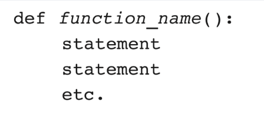
FUNCTIONS
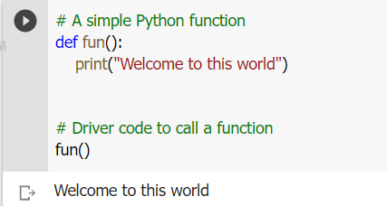
FUNCTIONS NAMES
Function naming rules:
• Cannot use key words as a function name
• Cannot contain spaces
• First character must be a letter or underscore
• All other characters must be a letter, number or underscore
• Uppercase and lowercase characters are distinct
FUNCTIONS
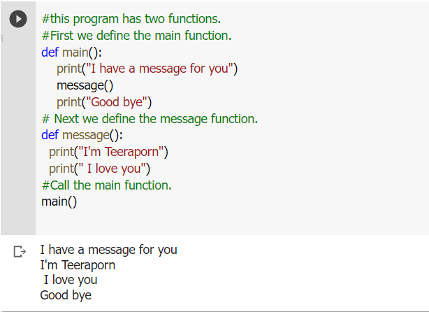
FUNCTIONS
Designing Program Using Functions
FUNCTIONS
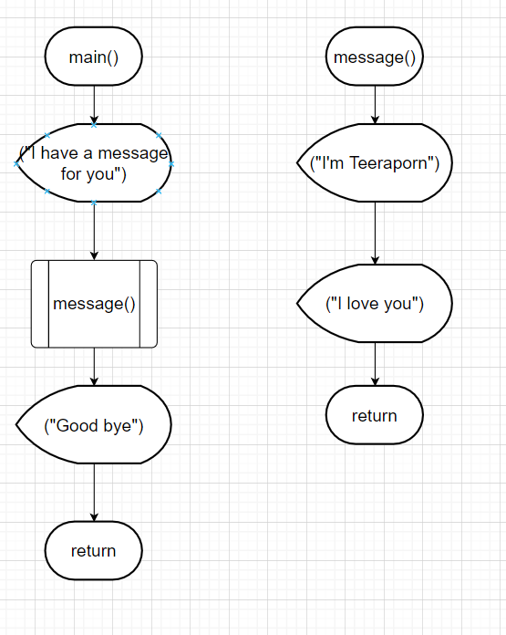
FUNCTIONS
LOCAL VARIABLES
A local variable is created inside a function and cannot be
accessed by statements that are outside the function. Different
functions can have local variables with the same names because
the functions cannot see each other's local variables.
LOCAL VARIABLES
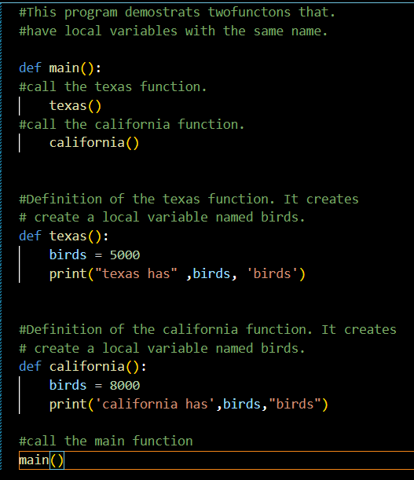
PASSING ARGUMENTS
An argument is any piece of data that is passed into a function
when the function is called. A parameter is a variable that receives
an argument that is passed into a function.
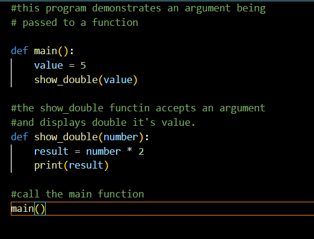
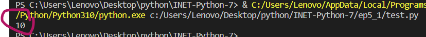
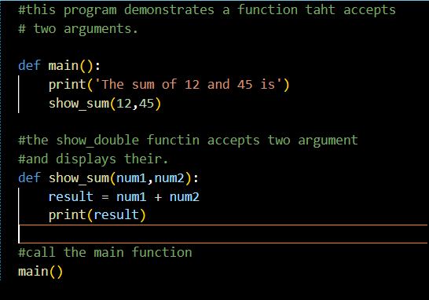
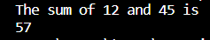
PASSING ARGUMENTS
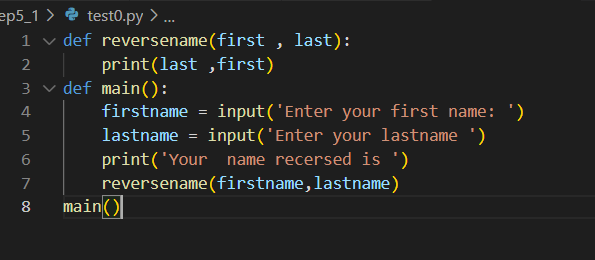
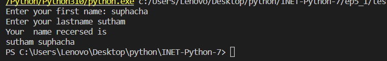
FUNCTIONS
Local, Global Variables and Global Constants
Local, Global Variables and Global Constants
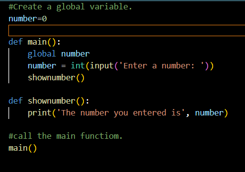
Local, Global Variables and Global Constants

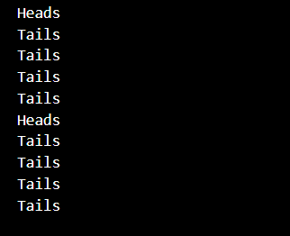
FUNCTIONS
Value-Returning Functions
VALUE RETURNING FUNCTION
A value-returning function has a return statement that returns a
value back to the part of the program that called it.
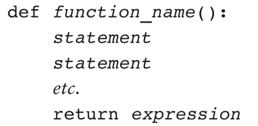
VALUE-RETURNING FUNCTIONS
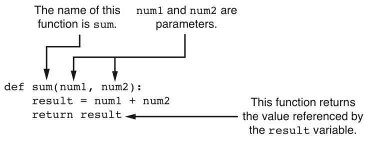
VALUE-RETURNING FUNCTIONS
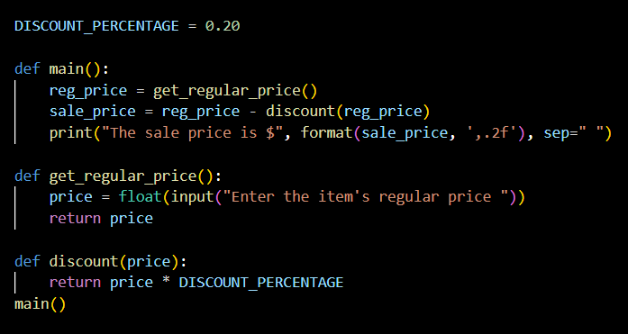
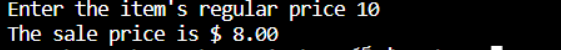
VALUE-RETURNING FUNCTIONS
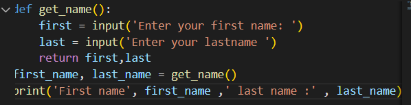
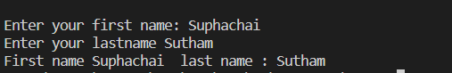
FUNCTIONS
Storing Functions in Modules
STORING FUNCTIONS IN MODULES
circle.py
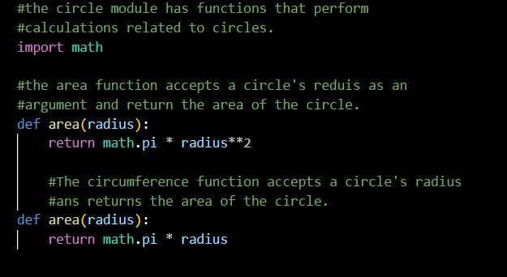
STORING FUNCTIONS IN MODULES
rectangle.py
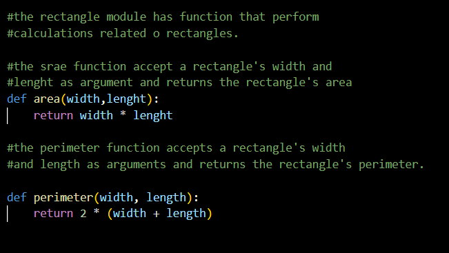
USING MODULES
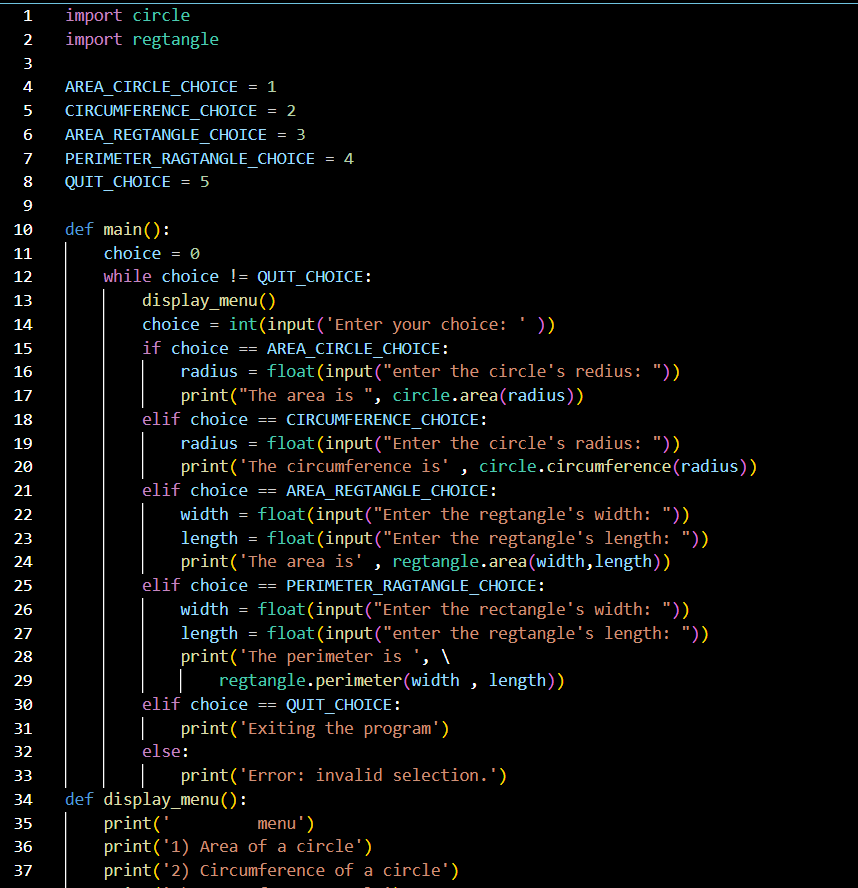
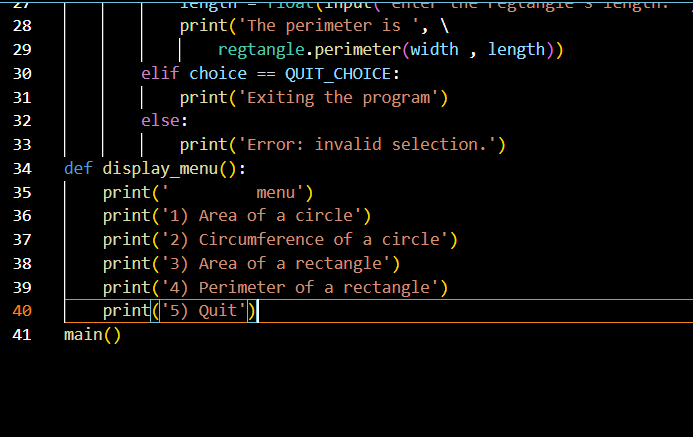
FUNCTIONS
Recursive: a function that calls itself.
RECURSIVE
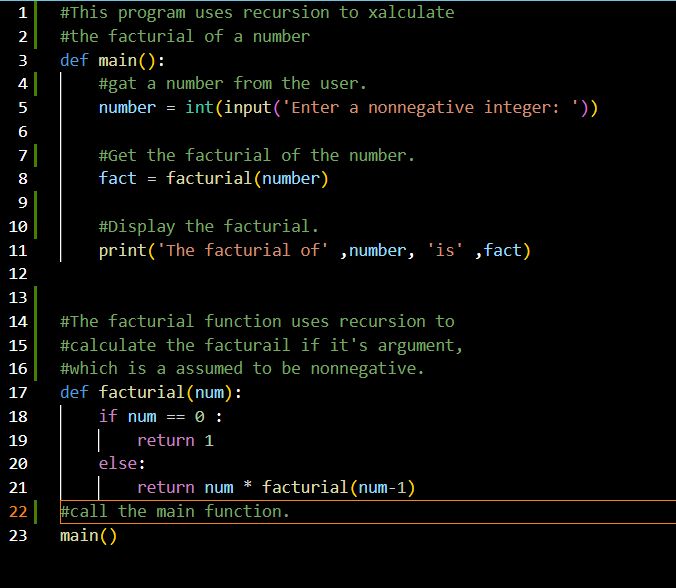
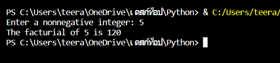
FUNCTIONS
Python common functions
COMMON FUNCTIONS
abs()
returns the avsolute value of a numeric valur (e.g.integer of float). Obviously it can't be string. It has to be numeric value.
Example: abs(-4/3)
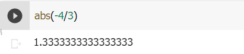
round()
returns the rounded value of a numeric value.

COMMON FUNCTIONS
/center>
returns the smallest item of a list or of the types-in arguments.it can even be a string
Example: min(3,2,5)
Example: min(c,l,a)
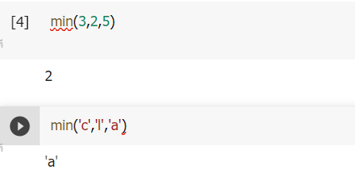
sorted()
It sorts a list into ascending order. The list can contain strings or numbers
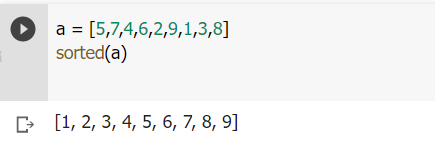
COMMON FUNCTIONS
sum()
it sums a list. The list can have all types of numeric values, although it handle float...weel, not smartly.

COMMON FUNCTIONS
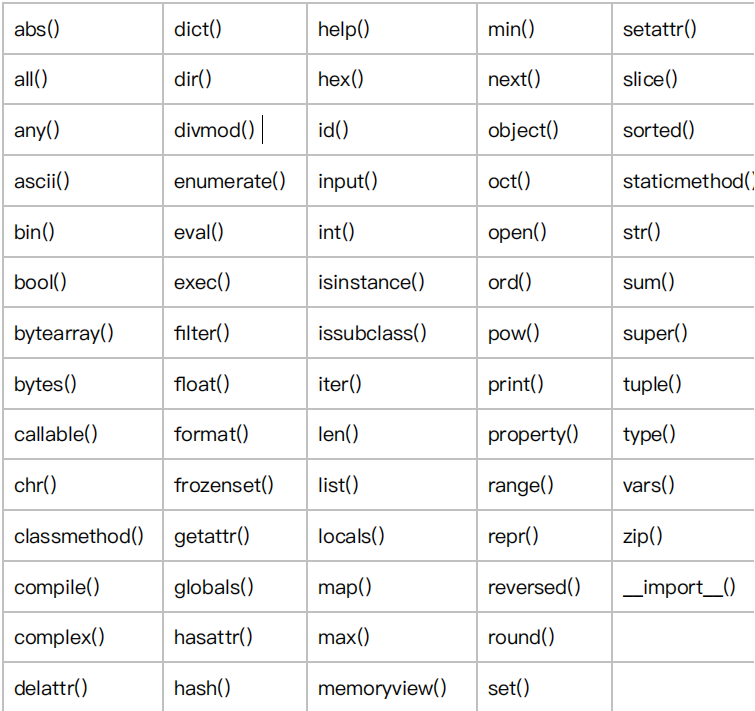
กลับ
บทถัดไป